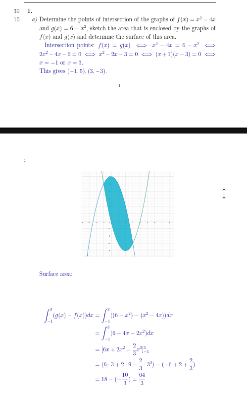

EXAM 2 WARNING: BIG GEMINI HALLUCINATIONS IDK WHAT HAPPENED
Question 1: Series Convergence and Divergence
a) The Ratio Test
Why do we use the Ratio Test?
The key is to recognize the structure of the series terms, $a_n = \frac{n+1}{1.01^n}$. When you see terms involving **exponentials** (like $1.01^n$) or **factorials** (like $n!$), the Ratio Test is almost always the best tool. This is because the test creates a fraction $\frac{a_{n+1}}{a_n}$, which allows the exponential or factorial terms to cancel out beautifully, making the limit easy to calculate.
How the Ratio Test Works
We compute the limit $L = \lim_{n \to \infty} \left| \frac{a_{n+1}}{a_n} \right|$.
- If $L < 1$, the series **converges** absolutely.
- If $L > 1$, the series **diverges**.
- If $L = 1$, the test is inconclusive, and we must try another method.
Step-by-Step Solution
- Identify $a_n$ and $a_{n+1}$: $$ a_n = \frac{n+1}{1.01^n} \quad \implies \quad a_{n+1} = \frac{(n+1)+1}{1.01^{n+1}} = \frac{n+2}{1.01^{n+1}} $$
- Set up the ratio $\frac{a_{n+1}}{a_n}$: $$ \frac{a_{n+1}}{a_n} = \frac{\frac{n+2}{1.01^{n+1}}}{\frac{n+1}{1.01^n}} = \frac{n+2}{1.01^{n+1}} \cdot \frac{1.01^n}{n+1} $$
- Simplify the expression: The exponential terms simplify: $\frac{1.01^n}{1.01^{n+1}} = \frac{1}{1.01}$. $$ \frac{a_{n+1}}{a_n} = \frac{n+2}{n+1} \cdot \frac{1}{1.01} $$
- Compute the limit: $$ L = \lim_{n \to \infty} \left| \frac{n+2}{n+1} \cdot \frac{1}{1.01} \right| = \frac{1}{1.01} \cdot \lim_{n \to \infty} \frac{n+2}{n+1} $$ To solve the remaining limit, we can divide the numerator and denominator by the highest power of $n$: $$ \lim_{n \to \infty} \frac{1 + \frac{2}{n}}{1 + \frac{1}{n}} = \frac{1+0}{1+0} = 1 $$ So, the final limit is $L = \frac{1}{1.01} \cdot 1 = \frac{1}{1.01}$.
- Conclusion: Since $L = \frac{1}{1.01} < 1$, the series $\sum_{n=1}^\infty \frac{n+1}{1.01^n}$ **converges** by the Ratio Test.
b) The Limit Comparison Test
Why do we use the Limit Comparison Test?
Look at the terms $a_n = \frac{\sqrt{n}}{n+1}$. This is a rational-like function of $n$. For very large $n$, the "+1" in the denominator doesn't change the value much. So, the terms "behave" like $\frac{\sqrt{n}}{n} = \frac{n^{1/2}}{n^1} = \frac{1}{n^{1/2}}$. Since we can easily determine the convergence of $\sum \frac{1}{n^{1/2}}$ (it's a p-series), the Limit Comparison Test is the perfect tool to formally link the behavior of our complicated series to this simpler one.
How the Limit Comparison Test Works
We choose a simpler series $\sum b_n$ whose convergence we know. We then compute the limit $L = \lim_{n \to \infty} \frac{a_n}{b_n}$.
- If $L$ is a finite, positive number ($0 < L < \infty$), then both series share the same fate: they either both converge or both diverge.
Step-by-Step Solution
- Identify $a_n$ and choose a comparison series $b_n$: $$ a_n = \frac{\sqrt{n}}{n+1} $$ As discussed, we choose $b_n$ based on the dominant terms: $$ b_n = \frac{\sqrt{n}}{n} = \frac{1}{\sqrt{n}} = \frac{1}{n^{1/2}} $$
- Analyze the comparison series $\sum b_n$:
The series $\sum_{n=1}^\infty \frac{1}{n^{1/2}}$ is a **p-series** with $p = 1/2$. Since $p \le 1$, the series $\sum b_n$ **diverges**.
- Compute the limit of the ratio: $$ L = \lim_{n \to \infty} \frac{a_n}{b_n} = \lim_{n \to \infty} \frac{\frac{\sqrt{n}}{n+1}}{\frac{1}{\sqrt{n}}} = \lim_{n \to \infty} \frac{\sqrt{n} \cdot \sqrt{n}}{n+1} = \lim_{n \to \infty} \frac{n}{n+1} $$ This limit is equal to 1.
- Conclusion: Since $L=1$ (which is finite and positive) and we know that $\sum b_n$ diverges, the original series $\sum_{n=1}^\infty \frac{\sqrt{n}}{n+1}$ must also **diverge** by the Limit Comparison Test.

Question 2: Area Between Curves
What is the core idea?
The area of a region enclosed by two functions is found by summing up an infinite number of infinitesimally thin vertical rectangles that fill the region. The height of each rectangle is the difference between the top curve and the bottom curve, $(\text{top function} - \text{bottom function})$. The width is an infinitesimal change in x, $dx$. The definite integral $\int_a^b (\text{top} - \text{bottom}) \,dx$ is the mathematical tool that performs this summation from the left intersection point ($a$) to the right intersection point ($b$).
Step 1: Find the Intersection Points (The Boundaries)
To find where the region begins and ends, we set the two functions equal to each other and solve for $x$.
$$ f(x) = g(x) \implies x^2 - 4x = 6 - x^2 $$ $$ 2x^2 - 4x - 6 = 0 $$ $$ x^2 - 2x - 3 = 0 $$ $$ (x-3)(x+1) = 0 $$The intersection points are at $x = -1$ and $x = 3$. These will be our limits of integration, $a=-1$ and $b=3$.
Step 2: Determine the Top and Bottom Functions
In the interval $[-1, 3]$, we need to know which function has a greater y-value. We can test a point inside the interval, like $x=0$:
- $f(0) = 0^2 - 4(0) = 0$
- $g(0) = 6 - 0^2 = 6$
Since $g(0) > f(0)$, the function $g(x) = 6 - x^2$ is the **top function** and $f(x) = x^2 - 4x$ is the **bottom function** on this interval.
Step 3: Set Up and Evaluate the Integral
The area $A$ is given by the integral of (top - bottom):
$$ A = \int_{-1}^{3} \left[ (6 - x^2) - (x^2 - 4x) \right] dx $$ $$ A = \int_{-1}^{3} (6 + 4x - 2x^2) dx $$Now, we find the antiderivative and apply the Fundamental Theorem of Calculus:
$$ A = \left[ 6x + 4\frac{x^2}{2} - 2\frac{x^3}{3} \right]_{-1}^{3} = \left[ 6x + 2x^2 - \frac{2}{3}x^3 \right]_{-1}^{3} $$Evaluate at the upper and lower bounds:
$$ \text{At } x=3: \quad (6(3) + 2(3)^2 - \frac{2}{3}(3)^3) = (18 + 18 - 18) = 18 $$ $$ \text{At } x=-1: \quad (6(-1) + 2(-1)^2 - \frac{2}{3}(-1)^3) = (-6 + 2 + \frac{2}{3}) = -4 + \frac{2}{3} = -\frac{10}{3} $$Finally, subtract the lower bound evaluation from the upper bound evaluation:
$$ A = 18 - \left(-\frac{10}{3}\right) = 18 + \frac{10}{3} = \frac{54}{3} + \frac{10}{3} = \frac{64}{3} $$Interactive Visualization
The plot below shows the two functions and the shaded region whose area we calculated. You can see the intersection points and confirm that $g(x)$ is above $f(x)$ in the interval.
Question 4: Multivariable Extrema
How do we approach this?
This is a classic optimization problem for a function of two variables. The process is always the same:
1. Find Candidates: Locate all the "flat spots" on the surface by finding the critical points where the gradient $\nabla f = \vec{0}$. These are the only possible locations for local minima, maxima, or saddle points.
2. Classify Candidates: Use the Second Derivative Test to analyze the curvature of the surface at each critical point to determine its nature.
3. Consider the Big Picture: Check for global extrema by analyzing the function's overall behavior.
Step 1: Find the Critical Points
First, we expand the function $f(x, y) = (2x + y)^2 + 2(x^2 - 1)^2$ for easier differentiation:
$$ f(x,y) = (4x^2 + 4xy + y^2) + 2(x^4 - 2x^2 + 1) = 4x^2 + 4xy + y^2 + 2x^4 - 4x^2 + 2 $$ $$ f(x,y) = 2x^4 + 4xy + y^2 + 2 $$Now, compute the partial derivatives and set them to zero:
$$ \frac{\partial f}{\partial x} = 8x^3 + 4y = 0 \quad \implies \quad y = -2x^3 \quad \text{(1)} $$ $$ \frac{\partial f}{\partial y} = 4x + 2y = 0 \quad \implies \quad y = -2x \quad \text{(2)} $$We have two expressions for $y$, so we can set them equal:
$$ -2x^3 = -2x \implies x^3 = x \implies x^3 - x = 0 \implies x(x^2-1) = 0 $$ This gives us three possible values for $x$: $x=0$, $x=1$, and $x=-1$. We use equation (2) to find the corresponding $y$ value for each:- If $x=0$, then $y = -2(0) = 0$. Point: $(0,0)$.
- If $x=1$, then $y = -2(1) = -2$. Point: $(1,-2)$.
- If $x=-1$, then $y = -2(-1) = 2$. Point: $(-1,2)$.

Step 2: The Second Derivative Test
We calculate the second partial derivatives to find the discriminant $D = f_{xx}f_{yy} - (f_{xy})^2$.
$$ f_{xx} = \frac{\partial}{\partial x}(8x^3+4y) = 24x^2 $$ $$ f_{yy} = \frac{\partial}{\partial y}(4x+2y) = 2 $$ $$ f_{xy} = \frac{\partial}{\partial x}(4x+2y) = 4 $$ So, $D = (24x^2)(2) - (4)^2 = 48x^2 - 16$.Now we test each critical point:
- At (0, 0): $D(0,0) = 48(0)^2 - 16 = -16$. Since $D < 0$, this is a **saddle point**.
- At (1, -2): $D(1,-2) = 48(1)^2 - 16 = 32$. Since $D > 0$, we check $f_{xx}$. $f_{xx}(1,-2) = 24(1)^2 = 24 > 0$. This is a **local minimum**.
- At (-1, 2): $D(-1,2) = 48(-1)^2 - 16 = 32$. Since $D > 0$, we check $f_{xx}$. $f_{xx}(-1,2) = 24(-1)^2 = 24 > 0$. This is also a **local minimum**.
Step 3: Check for Global Extrema
Here we can use a powerful observation. Look at the original form of the function:
$$ f(x, y) = (2x + y)^2 + 2(x^2 - 1)^2 $$This is a sum of squared terms. Since any real number squared is non-negative, the smallest possible value for $f(x,y)$ is 0. Can our function actually equal 0? Let's check our local minima:
$$ f(1,-2) = (2(1) + (-2))^2 + 2((1)^2 - 1)^2 = (0)^2 + 2(0)^2 = 0 $$ $$ f(-1,2) = (2(-1) + 2)^2 + 2((-1)^2 - 1)^2 = (0)^2 + 2(0)^2 = 0 $$Since the function value at these points is 0, and the function can never be less than 0, these two local minima are also **global minima**.
Interactive 3D Visualization
The plot below shows the surface of $f(x,y)$. You can clearly see the two "valleys" where the global minima occur and the saddle point between them at the origin.